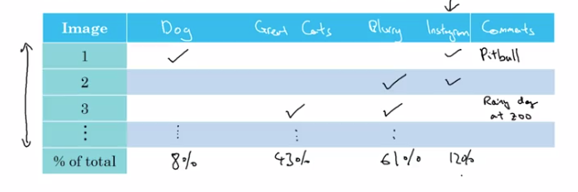
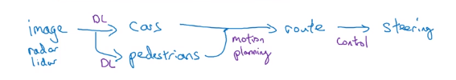

I-Error Analysis
Carrying out error analysis
"Error analysis": manually examine the mistakes → get insight of what's next.
"ceiling on performance"
example:
cat classification, found some false-positives of dog pictures. → should you try to make ML system better on dog or not ?
→ error analysis:
- get ~100 false positive examples
- count how many are dogs
→ if only 5% of errors are dogs → performance can improve by <=5% even if totaly solved dog problem.
→ if 50% are dos → might need to improve on dogs.
example2 (evaluate multiple ideas in parallel):

Pick one idea to iterate on: use a spreadsheet

Cleaning up incorrectly labeled data
What to do if there are incorrect labels in data ?
- In training set:
DL algos are quite robust to random errors in training set.
→ if incorrect labels is close to random errors (percentage not too high), it's OK to train.
caveat: Robust to random errors, not systematic errors. E.g. all white dogs are labeled as cats.
- In dev/test set:
In error analysis, count cases of incorrect labels.

If #incorrect labels makes a significent different for evaluating, then fix it.
example:

Remember: goal of dev set is to help selecting between two models.
Correcting labels in dev/test sets:
- apply the same process to test set — dev/test sets have the same distribution.
- consider both false positive and false negatives. → to make estimate of performance unbiased. (might take longer time)
- less important to correct training set: training set can come from slight different distribution, but important dev/test come from the same distribution.
Build your first system quickly, then iterate
example: speech recognition
many directions to go → which direction to pick ?
Build system quickly and iterate.
- set up dev/test set, set metric
- build intitial system quickly: build something quick & dirty that works.
- Bias/Variance analysis & Error analysis → prioritize next steps
II-Mistmatched training and dev/test set
Training and testing on different distributions
When distribution of train and dev/test sets are different.
example: cat app
Two sources:
- webpages (high resolution, a lot of data)
- user uploaded (blury, relatively small amount).

option1. put both data together, randomly shuffle & split train/dev/test
advantage: train/dev/test come from distribution
disadvantage: many examples in dev/test set come from webpages — but cares more about performance on user-uploaded examples → not recommended, target is not really what we care about
option2. training set mostly from web, for dev/test all from user-uploaded.
advantage: Err_dev/Err_test really reflects what the target is.
example2: speech recognition (speech activated rearview mirror)
- training data: many data coming from different sources of speech recognition.
- dev/test: small amount, coming from speech activated rearview mirror.
takeaway:
- use large training set, even if distribution is different from dev/test set
- dev/test data should reflect what to expect from the system.
Bias and Variance with mismatched data distributions
B&V analysis changes when training set distribution is different from dev/test set.
When distr(train)!=distr(dev/test):
No longer can say system has large variance problem when seeing Err_train < Err_dev. (Poor performance on dev set may not come from overfitting, but may also from change of distrubtion in data).
⇒ introduce training-dev set: same distrubution as training set, but not used in training.
Now can look at Err_traindev and see if model has variance/bias problem or data-mismatch problem:

General principles:

(also possible to have Err_dev/Err_test < Err_train/Err_traindev, because of data mismatch)
More general formulation (example: rearview mirror):
include Err_human on dev/test data.

Addressing data mismatch
How to address data-mismatch problem? → no systematic solution.
- manual error analysis: understand difference between train and dev sets.
e.g. noise in car
- make training data more similar / collect more data similar to dev/test set.
e.g. simulate noisy in-car data (artificial data synthesis)
Artificial data synthesis
caution: avoid synthesise only a small part of all possible examples.
car noise example:

car recognition example:
synthesis car pictures from a video game
problem: if there're only 20 different cars in video cars → overfit
III-Learning from multiple tasks
Transfer learning
Learned knowledge from one task applied to a second task.
reason: some low-level features can be shared for different tasks.
example 1. cat classifier applied to X-ray scans diagnosis.
change last output layer of original model, initial w[L]/b[L] of last layer and retrain the params.
if dataset small: only retrain last layer params (pre-training)
else: retrain all params (fine-tuning)
example 2. speech recognition transfer to trigger word detection
also possilbe to create more layers to NN
When to use transfer learning:
- task A ans B have the same input
- a lot of data for task A, relatively small amount of data for task B
- low level feature of task A could be helpful for task B
Multi-task learning
transfer learning: task A and B are sequential
multi-task learning: in parallel
example: self-driving car
multiple kind of objects to detect

multi-label problem (each example can have multiple labels):
→ output layer should no longer be softmax

Training on NN for 4 tasks instead of 4 separate NNs: early-layer features can be shared.
With missing entries are in labels:

⇒ in loss function, sum only on labeled entries.
When to use multi-task learning:
- lower-level features can be shared
- similar amount of data for each task — data for other tasks could help learning of main task

- can train a big enough NN to do well on all tasks.
in practice: multi-task learning is much less common than transfer learning.
IV-End-to-end deep learning
What is end-to-end deep learning?
E2E: omit multiple stages in pipeline by a single NN.
example: speech recognition.
note: E2E can work well only when have really large dataset.
example2: face recognition from camera.
2-stage works better than E2E:
image → face detection → face recognition.
reason: a lot of data for each of the 2 tasks, but much less data for E2E.
exapmle3: machine translation.
E2E works well because of large amount of training data.
example4: estimating child's age from X-ray img.
separate stages works better.

Whether to use end-to-end deep learning
Pros and cons of E2E learning.
Pros:
- let the data speak, avoid intermediate values (e.g. phonemes in speech recognition)
- less hand-designing of components needed
Cons:
- Need large amount of data (X, Y)
- Excludes potentially useful hand-designed components
Key question for applying E2E learning: sufficient data available to learn a function of the complexity needed to map from x to y?
example: self-driving cars
in practice: multi-stage system

Part 9 of series «Andrew Ng Deep Learning MOOC»：
- [Neural Networks and Deep Learning] week1. Introduction to deep learning
- [Neural Networks and Deep Learning] week2. Neural Networks Basics
- [Neural Networks and Deep Learning] week3. Shallow Neural Network
- [Neural Networks and Deep Learning] week4. Deep Neural Network
- [Improving Deep Neural Networks] week1. Practical aspects of Deep Learning
- [Improving Deep Neural Networks] week2. Optimization algorithms
- [Improving Deep Neural Networks] week3. Hyperparameter tuning, Batch Normalization and Programming Frameworks
- [Structuring Machine Learning Projects] week1. ML Strategy (1)
- [Structuring Machine Learning Projects] week2. ML Strategy (2)
- [Convolutional Neural Networks] week1. Foundations of Convolutional Neural Networks
- [Convolutional Neural Networks] week2. Deep convolutional models: case studies
- [Convolutional Neural Networks] week3. Object detection
- [Convolutional Neural Networks] week4. Special applications: Face recognition & Neural style transfer
- [Sequential Models] week1. Recurrent Neural Networks
- [Sequential Models] week2. Natural Language Processing & Word Embeddings
- [Sequential Models] week3. Sequence models & Attention mechanism
Disqus 留言